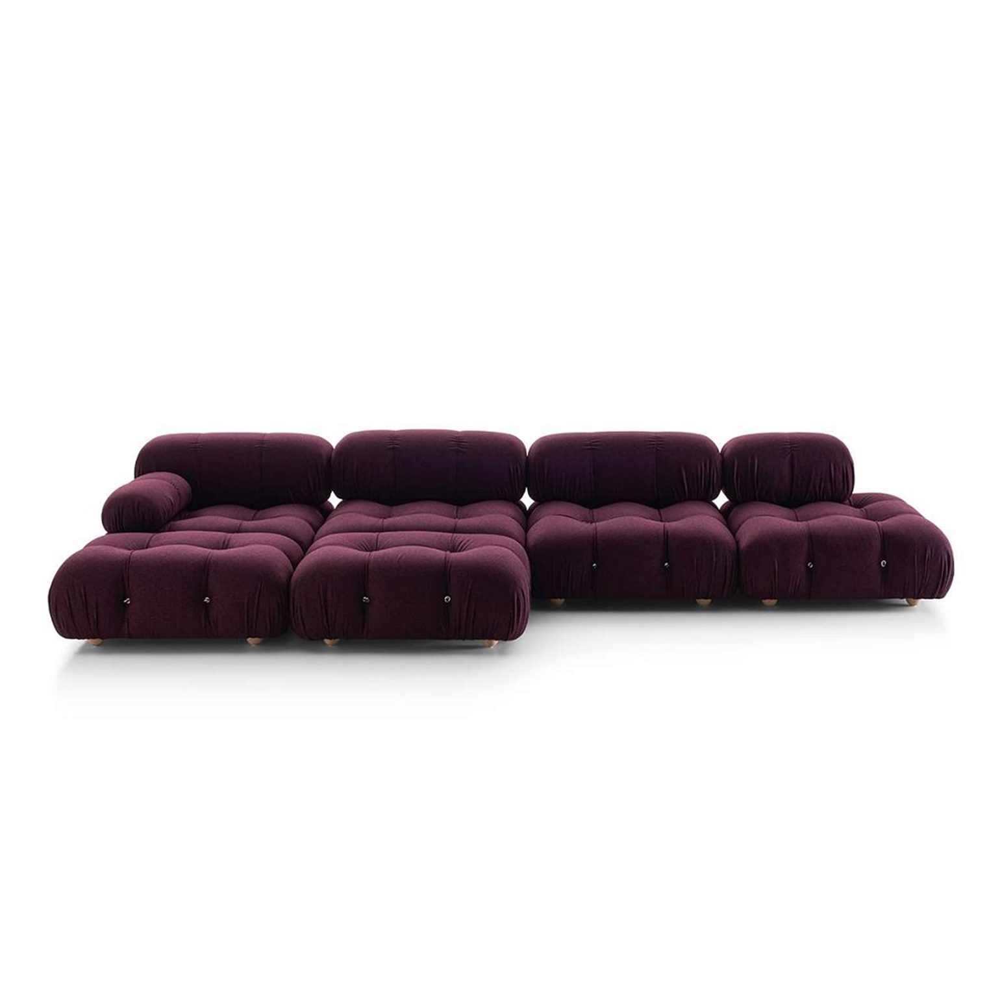
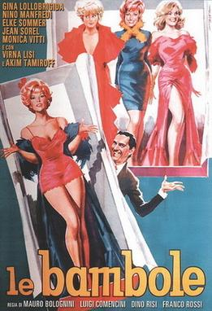
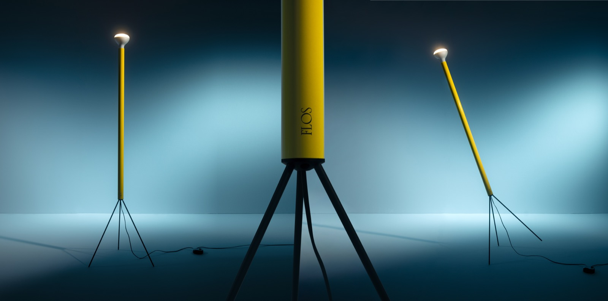

放大 +B&B Italia "Camaleonda"设计经典 ★★
意大利后现代代表作。模块化最适合 Lounge 5.2×6.8m 大空间。重新生产后市场价稳步攀升，B&B 限量花色每年涨 8-12%。
所有候选都符合两个标准之一 —— ① 中古真品（vintage authentic），有签名 / 出处，二级市场流通稳定； ② 设计经典持续生产款，原厂或授权重制，70 年以上设计史。 避免快时尚家具与无名复刻。点击缩略图放大。

放大 +意大利后现代代表作。模块化最适合 Lounge 5.2×6.8m 大空间。重新生产后市场价稳步攀升，B&B 限量花色每年涨 8-12%。

放大 +1972 原版进入纽约 MoMA 永久馆藏。曲面缝纫结构工艺难度高。Mr Bigglesworthy 偶有修复真品。
意大利"软家具革命"代表，纯抱枕+不锈钢夹结构，舒适度顶级。Cassina 重新生产，编号保收藏价值。
 放大 +
放大 +
丹麦黄金期巅峰之作，1951 原版近十年拍卖价翻 3 倍。新款 PP Møbler 手工，每把可追溯。Mr Bigg / Webb's 拿 1950-60s 原版是顶级藏品。
法国流体雕塑感单椅，进入巴黎装饰艺术博物馆。Artifort 持续生产，新品出厂编号。视觉冲击强。
Le Corbusier 表弟为印度钱迪加尔市政设计，编号刻在底部。过去 10 年拍卖价涨 5 倍。NZ 内基本无现货，走国际拍卖 + 集运到 Auckland。
 放大 +
放大 +
雕塑家做的家具，木+玻璃自支撑结构。MoMA 馆藏。持续生产 80 年，价格年增。
Mr Bigglesworthy 每月轮换 5-10 张丹麦柚木低桌，1500-4000 NZD 真品，签名 / 厂标可查。

放大 +意大利后现代灯具圣杯，大理石底座 + 弧形不锈钢臂可吊覆沙发上方。Flos 持续生产，原厂编号。新品 NZ$5-7k。
 放大 +
放大 +
"清除餐桌底下椅腿丛林"的革命性方案。与房子拱形门洞、弧形线条天然呼应。Knoll 编号防伪。Studio Italia 是 Knoll NZ 唯一授权。
丹麦黄金期家具，签名 + Møbelfabrik 标可追溯。1.6-2.0m 椭圆/圆形最适合 4.7×4.1 餐厅。
 放大 +
放大 +
丹麦家具单品销量第一。100+ 道工序、4 小时手工编织。Cult Design NZ 唯一授权。整组 6 把 NZ$11-14k。二手保值率超 70%。
9 层压制单板 + 钢腿，70 年从未停产。Fritz Hansen 底部铜牌编号。Cult Design NZ 唯一授权。整组 6 把 NZ$10-12k。
 放大 +
放大 +
早期 Carl Hansen 或 FDB Møbler 出品，签名 + 厂标在椅子底部。整组 6 把同批次 vintage NZ$5-9k，比新品便宜还更升值。
 放大 +
放大 +
丹麦灯具圣杯，三层反射板让光线 100% 无眩晕。1958 至今持续生产，每盏底部刻字。NZ$1.5-2k。
法国战后设计标志件，1953 原版 Christie's 拍卖一盏 €60k+。DCW Éditions 现有授权重制，Serge Mouille 家族监督。新品 NZ$8-12k。
大部分授权展厅集中在 Grafton 的 Nugent Street（ECC + Studio Italia + Tim Webber 一条街）和 Parnell（Cult Design + Matisse）。中古真品在 Eden Terrace 的 Newton Road。一个周末可以扫完。
| 店 | 地址 | 代理 / 专长 | 链接 |
|---|---|---|---|
| Cult Design | 73 The Strand, Parnell | Fritz Hansen · Carl Hansen · HAY · Louis Poulsen | cultdesign.co.nz |
| Matisse | 130 St Georges Bay Rd, Parnell | B&B Italia · Maxalto · &Tradition | matisse.co.nz |
| ECC | 39 Nugent St, Grafton | Flos · DCW Éditions · 多品牌灯具 | ecc.co.nz |
| Studio Italia | 25 Nugent St, Grafton | Knoll（Saarinen Tulip）· Cassina | studioitalia.co.nz |
| Tim Webber | 12 Nugent St, Grafton | NZ 当代实木家具定制 | timwebberdesign.com |
| Mr Bigglesworthy / Good Form | 86 Newton Rd, Eden Terrace | 中古丹麦 / 意大利真品修复 | mrbigglesworthy.co.nz |
| Vitrine | Morningside | 法国 + 欧洲早期 20 世纪 | vitrine.co.nz |
| Webb's Auctions | Mount Eden | 季度 Premium Design 拍卖 | webbs.co.nz |
| Cordy's | Mount Eden / Remuera | 月度 Decorative + 周一 Estate | cordys.co.nz |
| 平台 | 覆盖 | 链接 |
|---|---|---|
| 1stDibs | 全球顶级中古聚合 | 1stdibs.com |
| Pamono | 欧洲中古，欧元定价 | pamono.com |
| Selency | 法国 Art Deco + mid-century | selency.com |
| Catawiki | 荷兰拍卖，频次高 | catawiki.com |
| Wright Auctions | 芝加哥 mid-century | wright20.com |
| Lauritz | 丹麦本土拍卖 · Wegner / Mogensen 源头 | lauritz.com |
| Bukowskis | 瑞典 · 北欧家具源头 | bukowskis.com |